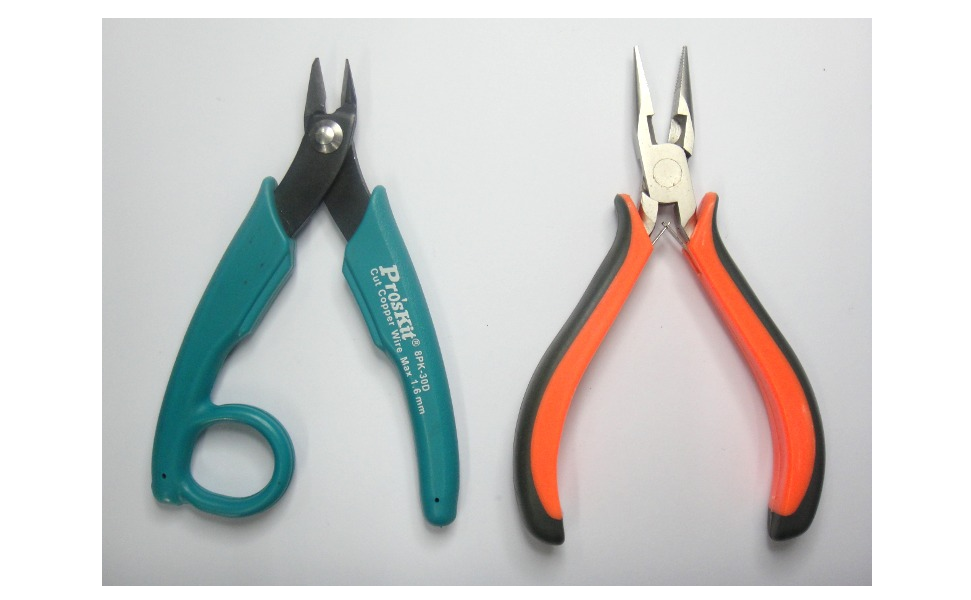

การต่อวงจรไฟฟ้าและอิเล็กทรอนิกส์พื้นฐานบนแผงต่อวงจร#
Keywords: Breadboard, Circuit Prototyping, Virtual Circuit Prototyping
- แนะนำการใช้งานแผงต่อวงจร
- เครื่องมือช่างสำหรับงานอิเล็กทรอนิกส์และสายไฟสำหรับต่อวงจร
- ซอฟต์แวร์สำหรับการฝึกต่อวงจรอิเล็กทรอนิกส์และจำลองการทำงานได้เสมือนจริง
▷ แนะนำการใช้งานแผงต่อวงจร#
แผงต่อวงจร หรือเรียกว่า "เบรดบอร์ด" (Breadboard) เป็นอุปกรณ์ที่นิยมใช้ในการต่อวงจรไฟฟ้าและอิเล็กทรอนิกส์ โดยไม่ต้องมีการบัดกรีขาอุปกรณ์หรือสายไฟ (Solderless) การต่อวงจรบนเบรดบอร์ดเหมาะสำหรับวงจรที่ใช้แรงดันไฟฟ้าระดับต่ำ (Low Voltages) เช่น อยู่ในช่วง +/- 12V ถ้าเป็นวงจรดิจิทัล ก็ใช้แรงดันไฟเลี้ยง +5V หรือต่ำกว่า และกระแสไฟฟ้าไม่เกิน 1A เป็นต้น ดังนั้นจึงใช้กับวงจรไฟฟ้าที่ใช้กำลังไฟฟ้าไม่มาก โดยรวมไม่เกิน 5W
เบรดบอร์ดมีลักษณะเป็นแผงสี่เหลี่ยม มีช่องเสียบขาอุปกรณ์ (Tie Points) หรือเรียกว่า "จุดเชื่อมต่อสัญญาณ" มีการจำแนกตามขนาดความยาวรวมถึงจำนวนช่องเสียบขา เช่น
- เบรดบอร์ดแบบยาว (Full-size Breadboard) ขนาด 2.2" x 7" (5.5 cm x 17 cm) โดยประมาณ มีจำนวนช่องเสียบ 830 ช่อง
- เบรดบอร์ดแบบยาวครึ่งหนึ่ง (Half-size Breadboard) ขนาด 2.52"x 3.70" (5.5 cm x. 8.5 cm) โดยประมาณ มีจำนวนช่วงเสียบ 400 ช่อง
- เบรดบอร์ดขนาดเล็ก (Small-Size/ Mini Breadboard) ขนาด 4.55 cm x 3.45 cm มีจำนวนช่องเสียบ 170 ช่อง แต่ไม่มีแถวคู่ของช่องเสียบ
รูป: แผนผังของเบรดบอร์ดแบบยาว มุมมองจากด้านบน และเส้นแสดงการเชื่อมต่อถึงกันทางไฟฟ้าระหว่างช่องเสียบในแต่ละแถว
รูป: เบรดบอร์ดความยาวครึ่งหนึ่ง มุมมองด้านบน (ซ้าย) และด้านล่างเมื่อไม่มีแผ่นปิด (ขวา) ซึ่งแสดงให้เห็นแถบโลหะนำไฟฟ้า
รูป: เบรดบอร์ดขนาดเล็กหลากสี
ถ้าวางเบรดบอร์ดตามแนวนอน จะเห็นว่า มีร่องตรงกลางแบ่งพื้นที่ออกเป็นสองส่วน ด้านบนและด้านล่างอย่างละเท่ากัน ซึ่งทำให้ใช้ได้กับอุปกรณ์หรือไอซีที่มีตัวถัง (แพ็คเกจ) ในรูปแบบที่เรียกว่า DIP (Dual-Inline Package)
ในแนวนอนตามยาวของเบรดบอร์ด มีรูเสียบขาอุปกรณ์ในสองแถวยาวขนานกัน แบ่งเป็นด้านบนและด้านล่างอย่างละคู่ รูเสียบขาอุปกรณ์ที่อยู่ในแนวนอนแถวเดียวกันตามยาวนี้ จะเชื่อมต่อถึงกันทางไฟฟ้า และใช้สำหรับต่อกับไฟเลี้ยง (ขั้วบวกและขั้วลบ)
ให้สังเกตว่า แผงต่อวงจร จะมีเส้นตรงสีแดงและสีน้ำเงินในแนวนอน เพื่อบ่งบอกว่า รูเสียบขาตามแนวสีแดง จะใช้สำหรับต่อกับไฟขั้วบวก (+) และรูเสียบขาตามแนวสีน้ำเงิน (-) จะใช้สำหรับต่อกับขั้วลบ หรือ "กราวด์" (Ground) ของวงจร ดังนั้นจึงเรียกว่า เรียกว่า Power Rails
ถ้าต้องการเชื่อมต่อแถวของรูเสียบขาอุปกรณ์สำหรับไฟเลี้ยงคู่ด้านบนและคู่ด้านล่างเข้าด้วยกัน ก็สามารถทำได้ โดยใช้ลวดสายไฟเชื่อมต่อถึงกันตามตัวอย่างในรูปต่อไปนี้
รูป: ตัวอย่างการเสียบสายไฟสำหรับแรงดันไฟเลี้ยง เชื่อมต่อสองฝั่ง
รูเสียบขาอุปกรณ์ในแถวแนวตั้ง จะมีเพียงแถวละ 5 รู ซึ่งเชื่อมต่อกันทางไฟฟ้าโดยลวดโลหะที่อยู่ด้านในเบรดบอร์ด และมีตัวหนังสือหรือสัญลักษณ์เขียนกำกับไว้ด้านข้างคือ a - e (แถวแนวตั้งด้านล่าง) และ f - j (แถวแนวตั้งด้านบน) ตามลำดับ นอกจากนั้น ยังมีตัวเลขเขียนกำกับไว้ที่แถวแนวตั้งของแต่ละแถวด้วย เช่น มีหมายเลขแถว 1 - 30 สำหรับแผงต่อวงจรแบบสั้น
ดังนั้นในการอ้างอิงหรือระบุตำแหน่งของรูเสียบขาอุปกรณ์ใด ๆ ของแผงต่อวงจร สามารถระบุหมายเลขของแถว และตัวหนังสือของรูเสียบขาอุปกรณ์ในแถวดังกล่าวได้ ยกตัวอย่าง หากต้องการจะเชื่อมต่อที่ตำแหน่ง 2a กับ 6b ด้วยลวดตัวนำ จะทำให้เกิดการเชื่อมต่อทางไฟฟ้าของรูเสียบขาอุปกรณ์ทั้งสองแถว (จำนวน 10 รู) คือ 2a – 2e และ 6a – 6e เป็นต้น
รูป: ตัวอย่างผังวงจร LED และตัวต้านทานจำกัดกระแส และการต่อวงจรบนเบรดบอร์ด โดยใช้แหล่งจ่ายไฟเลี้ยงเป็นแบตเตอรี่ AA 2 ก้อน (2x 1.5V)
ข้อสังเกต: เบรดบอร์ดบางรุ่น มีขนาดใหญ่และมีแผ่นโลหะเป็นฐานรอง และมีขั้วต่อสายไฟ (Binding Posts) ที่เรียกว่า Female Banana Jack Sockets ขนาด 4mm สำหรับใช้กับสายไฟ Banana Jack Cable สำหรับอุปกรณ์จ่ายไฟในห้องทดลองทางไฟฟ้า
รูป: ตัวอย่างเบรดบอร์ดที่ขนาดใหญ่และมีขั้วต่อสำหรับ Banana Jack Cable
รูป: ตัวอย่างเบรดบอร์ดที่มีฐานรอง และมีขั้วต่อสำหรับ Banana Jack Cable จำนวน 3 ขั้ว ได้แก่ Va Vb Gnd สำหรับแรงดันไฟฟ้าบวก แรงดันไฟฟ้าลบ และกราวด์ของวงจรอิเล็กทรอนิกส์ ตามลำดับ
▷ เครื่องมือช่างสำหรับงานอิเล็กทรอนิกส์และสายไฟสำหรับต่อวงจร#
ในงานด้านอิเล็กทรอนิกส์มีเครื่องมือช่างที่ใช้งานอยู่หลายประเภท แต่ที่จะกล่าวถึงถัดไป และจำเป็นต่อการฝึกปฏิบัติและทดลองต่อวงจรบนเบรดบอร์ด (ไม่เน้นการบัดกรี) ได้แก่ คีมตัด คีมปากแบน คีมปอกลวดสายไฟ ลวดสายไฟในการต่อวงจร
อุปกรณ์ประเภทคีม (Plier ไพล'เออะ) สำหรับงานอิเล็กทรอนิกส์ที่สำคัญและใช้งานบ่อย ได้แก่
- คีมตัด (Cutting Pliers) ใช้สำหรับตัดลวดสายไฟ หรือตัดขาอุปกรณ์ เป็นต้น
- คีมปากแบน หรือหรือปากจิ้งจก (Flat-Nose Pliers) ใช้สำหรับหยิบจับ พับงอขาอุปกรณ์หรือลวดสายไฟ เป็นต้น
- คีมปอกสายไฟ (Wire Strippers) ใช้ในการปอกฉนวนของสายไฟออก
- คีมปอกสายไฟอัตโนมัติ (Automatic Wire Strippers) ใช้ในการปอกฉนวนของสายไฟออกโดยใช้แรงน้อยกว่าคีมปอกสายไฟแบบธรรมดา

รูป: คีมตัดสายไฟและคีมปากแบน
รูป: คีมสำหรับปอกสายไฟ (Wire-Stripper Pliers)
รูป: คีมย้ำ-ตัด-ปอกสายไฟ (Crimping Pliers)
รูป: ตัวอย่างคีมปอกสายไฟแบบอัตโนมัติ (Automatic Wire Strippers)
สายไฟที่ใช้สำหรับการต่อวงจรบนเบรดบอร์ด จะเป็นสายไฟแบบเส้นเดียว (Solid Core Wires) ไม่ใช่สายไฟที่มีสายไฟเส้นเล็ก ๆ หลายเส้น (Stranded Wires)
รูป: ลวดสายไฟสำหรับการต่อวงจร
ในการต่อวงจรอิเล็กทรอนิกส์บนแผงต่อวงจร จะนิยมใช้ลวดสายไฟแกนเดียว เช่น ขนาด เบอร์ 24 ตามมาตรฐานอเมริกา (American Wire Gauge: AWG) หรือเรียกย่อๆว่า 24 AWG (หรืออาจจะใช้เบอร์ 22 AWG แทนก็ได้ ซึ่งมีขนาดใหญ่กว่าหรือมีพื้นที่หน้าตัดของลวดมากกว่าเบอร์ 24 AWG เล็กน้อย) ลวดสายไฟในลักษณะนี้จำหน่ายเป็นขด (เช่น ยาว 100 ฟุต) มีให้เลือกหลายสี เช่น แดง ดำ ขาว เหลือง และเขียว เป็นต้น ข้อดีของการใช้สายไฟประเภทนี้ในการต่อวงจร คือ สามารถตัดได้ตามขนาดที่ต้องการ
ขั้นตอนแรกในการเตรียมอุปกรณ์ก่อนนำไปใช้งานคือ การนำลวดสายไฟมาตัดตามขนาดความยาวที่ต้องการ แล้วจึงปอกฉนวนที่ปลายทั้งสองออกก่อน (ประมาณ 6 ถึง 8 มิลลิเมตร) โดยใช้คีมปอกสายไฟแบบธรรมดาหรือแบบอัตโนมัติ
รูป: การปอกฉนวนสายไฟเพื่อใช้ในการต่อวงจรบนเบรดบอร์ด

รูป: การตัดลวดสายไฟขนาดต่าง ๆ เพื่อนำมาใช้กับเบรดบอร์ด
รูป: ตัวอย่างลวดสายไฟที่มีการปอกฉนวน และดัดลวดให้ตั้งฉาก (U-shaped Jumper Wires) เพื่อนำไปใช้สำหรับการต่อวงจรไฟฟ้าบนเบรดบอร์ด
การเลือกใช้สายไฟสำหรับการต่อวงจร อาจเลือกแบบที่เรียกว่า Dupont Wires หรือมีการใส่คอนเนกเตอร์แบบ IDC Connectors ที่ปลายทั้งสองด้านมาให้แล้ว เพื่อความสะดวกในการใช้งาน แต่ก็มีต้นทุนที่สูงกว่าแบบ Solid Core Wires
รูป: สายไฟสำหรับการต่อวงจรที่มีปลายสายเป็นแบบ Male-Male
▷ ซอฟต์แวร์สำหรับการฝึกต่อวงจรอิเล็กทรอนิกส์และจำลองการทำงานได้เสมือนจริง#
ในปัจจุบันมีซอฟต์แวร์ให้เลือกใช้งานได้ฟรี สำหรับการฝึกต่อหรือสร้างวงจรอิเล็กทรอนิกส์ จำลองการทำงานได้เสมือนจริง (Virtual Circuit Prototyping) และสามารถใช้งานผ่านเว็บเบราว์เซอร์ได้ ผู้ใช้ไม่จำเป็นต้องติดตั้งโปรแกรมในเครื่องคอมพิวเตอร์ของผู้ใช้ ตัวอย่างซอฟต์แวร์ที่ได้รับความนิยม และใช้งานได้ง่าย ได้แก่

รูป: Autodesk Tinkercad Circuits

รูป: ตัวอย่างการต่อวงจรอิเล็กทรอนิกส์เหมือนจริงด้วย Autodesk Tinkercad Circuits

รูป: ตัวอย่างการต่อวงจรอิเล็กทรอนิกส์เหมือนจริงด้วย Autodesk Tinkercad Circuits
รูป: ตัวอย่างการต่อวงจรเสมือนจริงและจำลองการทำงานของวงจรด้วย Fritzing
รูป: ตัวอย่างการใช้มัลติมิเตอร์ดิจิทัล (Digital Multimeter) แบบเสมือนจริงและจำลองการทำงานของวงจรด้วย Fritzing
▷ กล่าวสรุป#
บทความนี้นำเสนอวัสดุ อุปกรณ์ เครื่องมือที่ใช้ในการฝึกต่อวงจรไฟฟ้า-อิเล็กทรอนิกส์บนเบรดบอร์ด และตัวอย่างซอฟต์แวร์ที่สามารถนำมาใช้ในการฝึกต่อวงจรเสมือนจริงและจำลองการทำงานของวงจรได้ ก่อนนำไปต่อทดลองจริงบนเบรดบอร์ด
บทความที่เกี่ยวข้อง
- แนะนำซอฟต์แวร์: Autodesk Tinkercad Circuits
- ซอฟต์แวร์สำหรับการวิเคราะห์และจำลองการทำงานของวงจรไฟฟ้า-อิเล็กทรอนิกส์
This work is licensed under a Creative Commons Attribution-ShareAlike 4.0 International License.
Created: 2023-11-23 | Last Updated: 2023-11-27